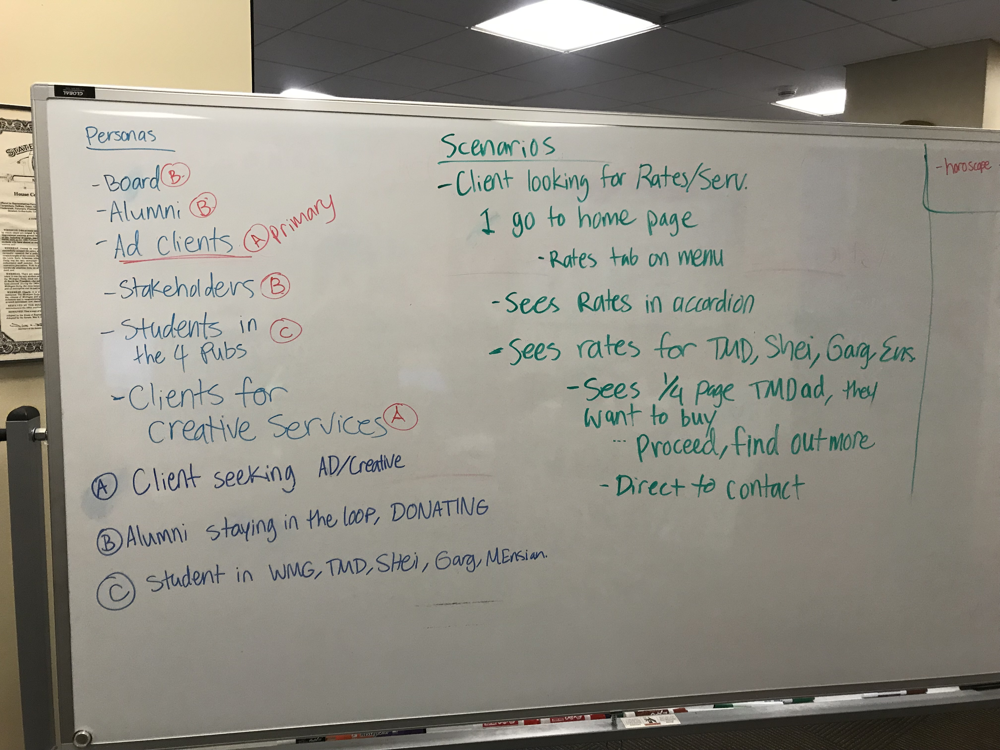
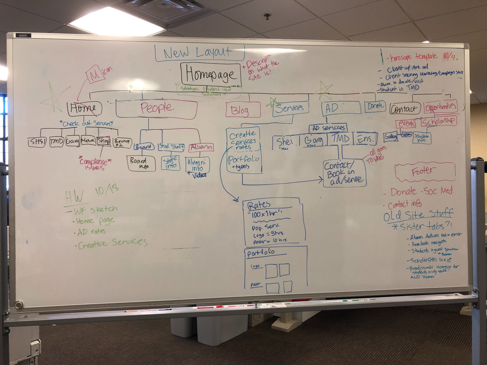
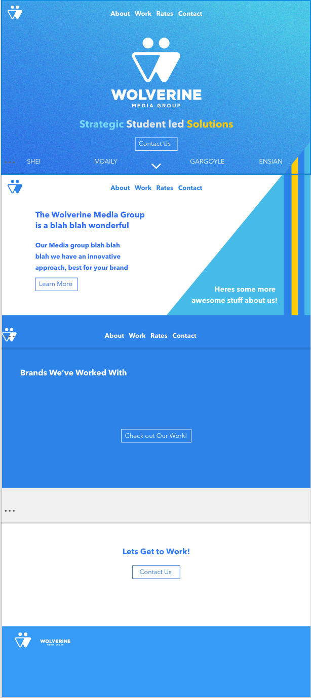
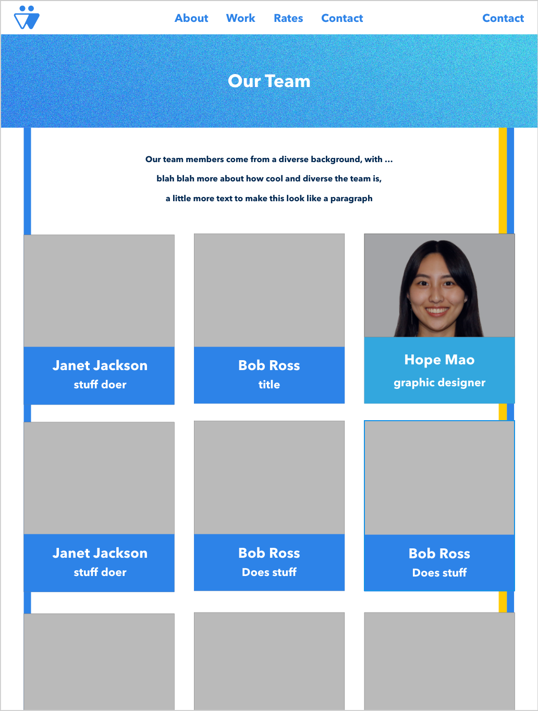
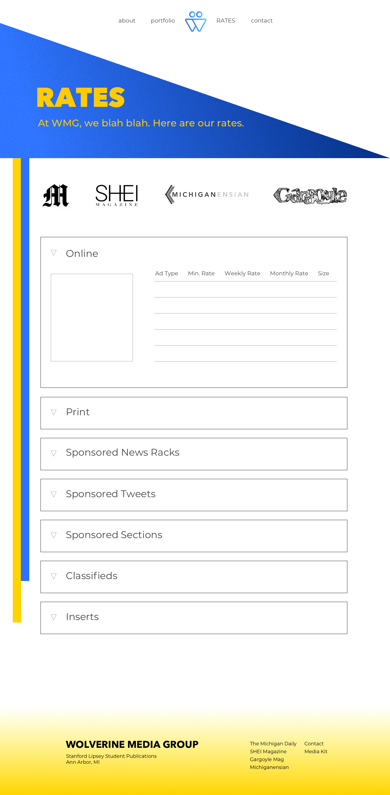
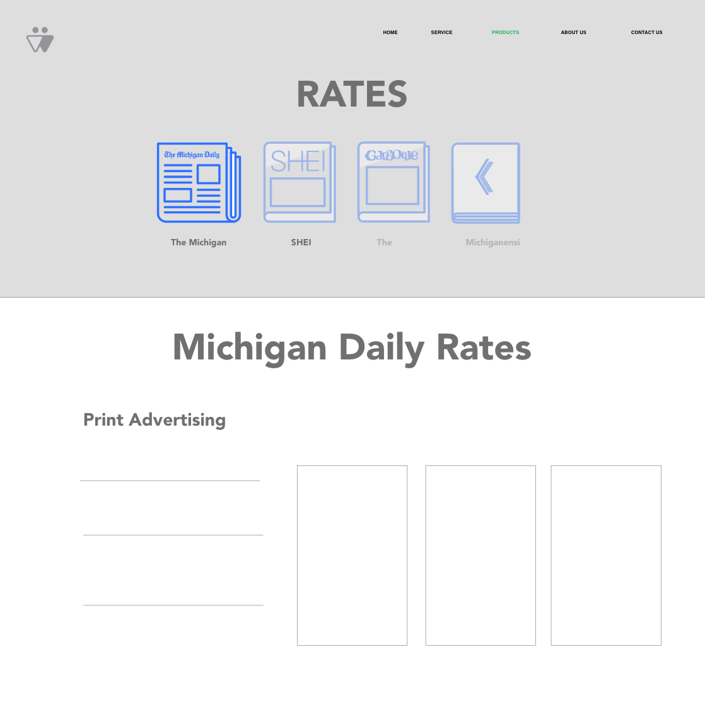

Wolverine Media Group
Introduction
While working at The Michigan Daily in the creative department, we decided to redesign the outdated student publications website and update it with new services and create a new branding name the Wolverine Media Group.
The Old Website
We first decided to analyze the pain points of the old website.
The main issues we found was the innefficient use of space, and an imbalance of information hierarchy.
There were many broken links and too much information included at once at times.
Overall, the focus of the old website is mainly on board members and alumni, and not necessarily the student publications' services themselves.
Old Publications Website
Competitive Analysis
The sales team analyzed rates of our competitors' prices for advertisements.
To draw inspiration for our website, we created a mood board on Invision with various layouts from other media and publications groups.
Invision Moodboard
Design Process
After analysing competitor sites and working more on our branding and logo design, we started to create personas and storyboard scenarios.

we also brainstormed a site map to visualize what important elements we wanted to include, making sure to stay minimalistic.

Wireframing
Each person on our team was in charge of creating wireframes for a few pages.
Below are some of our wireframes for the homepage and the advertising/rates page:
   
Our website is still a work in progress.
We are in the process of transferring our designs to Divy, a website building/hosting platform.